1 / 6

💻 TEKNOLOGI
AI Makin Canggih, Kepercayaan Digital Jadi PR Bareng
Ratusan praktisi, regulator, dan akademisi kumpul di GRACS 2026 buat bahas ini. Geser →
2 / 6
🏛️
Apa Itu GRACS 2026?
GRACS 2026 adalah IT Governance, Risk Management, Assurance & Cybersecurity Summit yang digelar ISACA Indonesia Chapter pada Rabu (14/10) di ARTOTEL Suites Mangkuluhur, Jakarta, sekaligus secara daring lewat Zoom. Acara ini mempertemukan regulator, pemimpin industri, akademisi, dan komunitas profesional.
3 / 6
🤝
Tema: Digital Trust in Motion
Tahun ini GRACS mengusung tema “Digital Trust in Motion: Securing the Intelligent Ecosystem”. Fokusnya: tata kelola teknologi, manajemen risiko, assurance, dan keamanan siber di tengah perkembangan AI serta ekosistem digital yang semakin terhubung.
4 / 6
💬
Pesan Utama: Teknologi Cepat, Kepercayaan Jangan Ketinggalan
President ISACA Indonesia Chapter Harun Al Rasyid menegaskan kecepatan perkembangan teknologi harus diimbangi kemampuan organisasi untuk mengelola risiko dan menjaga kepercayaan. Menurutnya, digital trust bukan hanya persoalan teknologi, tapi soal tata kelola, manajemen risiko, assurance, dan keamanan siber yang diterapkan terintegrasi dalam pengambilan keputusan.
5 / 6
🧩
Isu yang Dibahas: dari AI Governance sampai Privasi Data
Sejumlah isu masuk agenda GRACS 2026, antara lain digital trust, AI governance, cybersecurity and digital resilience, technology risk management, assurance, privacy and data protection, third-party risk, serta governance of intelligent ecosystems. Acara dibuka dengan sesi keynote regulator soal penguatan digital trust dan ketahanan siber nasional.
6 / 6
🤔
Efeknya ke lo apa?
Lo hidup di dalam ekosistem yang mereka bahas: e-wallet, belanja online, login pakai data pribadi. Kalau perusahaan dan regulator gagal jaga kepercayaan digital, yang kena imbasnya ya data lo — dari kebocoran data sampai penipuan. Jadi, aktifkan verifikasi dua langkah, jangan asal klik tautan, dan cek izin aplikasi di HP lo secara berkala.